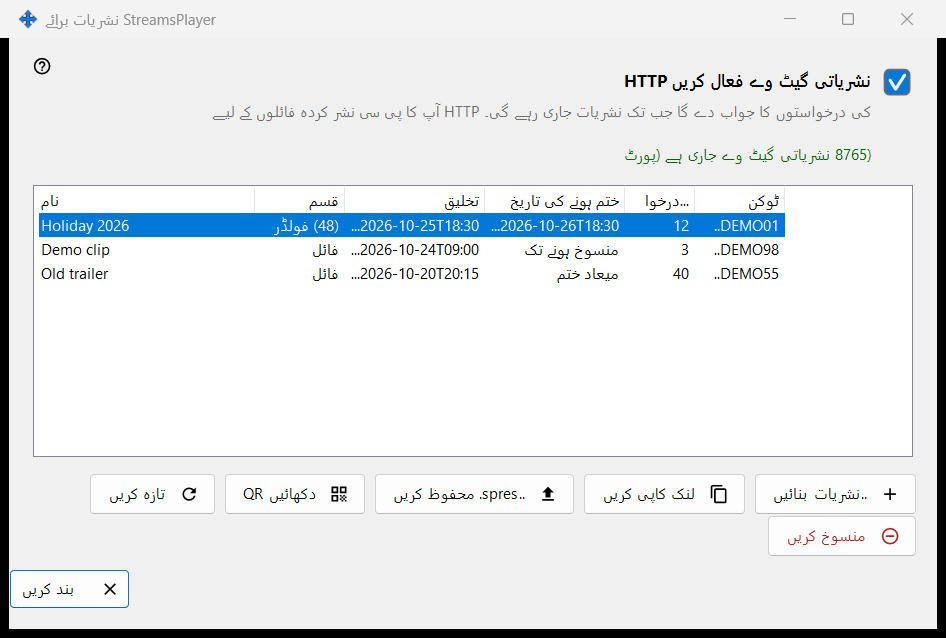
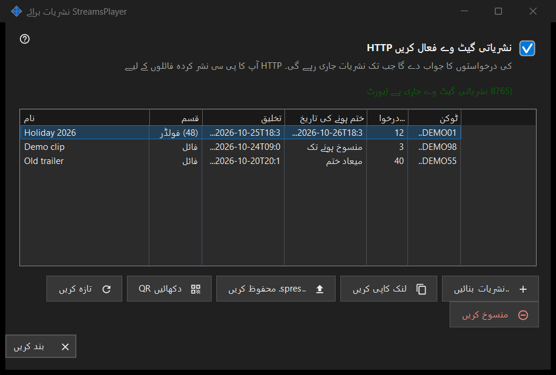

StreamsPlayer نشریات برائے
یہ کس مقصد کے لیے ہے
ان HTTP نشریات کو منظم کرتا ہے جو یہ پی سی میڈیا فائلوں اور فولڈروں کی StreamsPlayer ایپ کو پیش کرتا ہے۔ یہ Share Manager کی مرکزی ونڈو کے ..نشریات بٹن یا شامل کریں مینو کی آئٹم سے کھلتا ہے، جو صرف تب نظر آتے ہیں جب شیئرنگ سروس نشریات کی سپورٹ بتائے۔ راستے کے ساتھ لانچ اسے کھولتا ہے اور سیدھا اس راستے کے لیے نشریات بنائیں ڈائیلاگ پر لے جاتا ہے۔


اس ترتیب میں
- نشریاتی گیٹ وے فعال کریں HTTP کے خانے میں نشان لگائیں، یا بس ایک نشریات بنائیں، جو گیٹ وے خود آن کر دیتا ہے۔
- ..نشریات بنائیں دبائیں، میڈیا فائل چنیں، عنوان، مدت اور انٹرنیٹ کا اختیار طے کریں، اور نشر کریں دبائیں۔
- لنک کلپ بورڈ میں کاپی ہو جاتا ہے۔
- ایک قطار منتخب کریں اور نشریات کسی ڈیوائس کو دینے کے لیے لنک کاپی کریں، ..spres. محفوظ کریں یا دکھائیں QR استعمال کریں۔
- جب نشریات کی ضرورت نہ رہے تو اسے منسوخ کریں دبائیں۔
عناصر
گیٹ وے سوئچ
چیک باکس HTTP گیٹ وے کو آن یا آف کرتا ہے۔ اس کے نیچے کی لائن میں نشریاتی گیٹ وے بند ہے یا نشریاتی گیٹ وے جاری ہے (پورٹ N) لکھا ہوتا ہے۔ جب گیٹ وے چلتا ہے تو یہ پی سی نشریاتی فائلوں کی HTTP درخواستوں کا جواب دیتا ہے۔ اگر گیٹ وے شروع نہ ہو سکے (پورٹ، فائر وال) تو چیک باکس اپنی اصل حالت پر لوٹ جاتا ہے اور وجہ اس کے نیچے ایک سرخ لائن میں ظاہر ہوتی ہے؛ انکار کبھی ڈائیلاگ نہیں کھولتا۔
نشریات کی فہرست
کالم: نام، قسم (فائل، یا فولڈر اس کے آئٹمز کی تعداد کے ساتھ)، تخلیق، ختم ہونے کی تاریخ (ایک تاریخ، منسوخ ہونے تک یا میعاد ختم)، درخواستیں اور ٹوکن، جو صرف پہلے چھ حروف دکھاتا ہے۔ فہرست ہر 5 سیکنڈ بعد خود کو دوبارہ پڑھتی ہے۔ قطار پر ڈبل کلک اس کا لنک کاپی کرتا ہے۔
..نشریات بنائیں
ایک میڈیا فائل مانگتا ہے اور نشریات بنائیں ڈائیلاگ کھولتا ہے۔ آپ کے قبول کرنے کے بعد، ضرورت ہو تو گیٹ وے آن ہو جاتا ہے، نشریات بن جاتی ہے اور اس کا لنک رازداری کے نشانات کے ساتھ کلپ بورڈ میں کاپی ہو جاتا ہے؛ ایک پیغام کاپی کی تصدیق کرتا ہے۔
تازہ کریں اور منسوخ کریں
تازہ کریں صرف فولڈر کی نشریات کے لیے دستیاب ہے اور سروس سے اسے تازہ کرنے کو کہتا ہے؛ ایک پیغام اس کی تصدیق کرتا ہے۔ منسوخ کریں کسی بھی قطار پر کام کرتا ہے اور پہلے پوچھتا ہے: کیا نشریات X منسوخ کریں؟ لنک فوری طور پر کام کرنا بند کر دے گا۔ منسوخ کی گئی نشریات بحال نہیں کی جا سکتی؛ نئی بنائیں۔
جب صفحہ بند ہو
اگر شیئرنگ سروس جواب نہ دے یا نشریات کی سپورٹ نہ رکھتی ہو تو صفحہ اپنی جگہ خود بند ہو جاتا ہے اور سرخ لائن وجہ بتاتی ہے، مثلاً یہ کہ نشریاتی سروس کا یہ ورژن پرانا ہے، یا یہ کہ عمل مکمل نہیں ہو سکا اور تفصیلات لاگ میں ہیں۔
مینیجر کی ترتیبات · SFTP اشتراک کی ترتیبات · ایکسچینج سرور کی ترتیبات